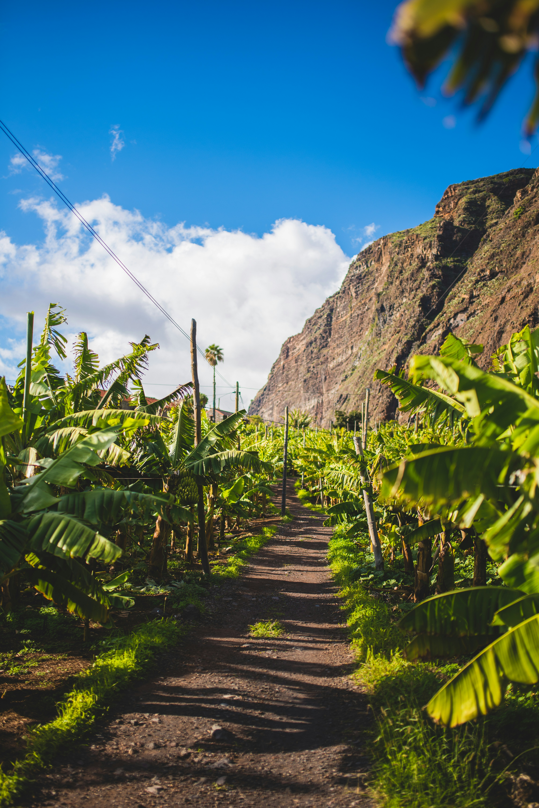
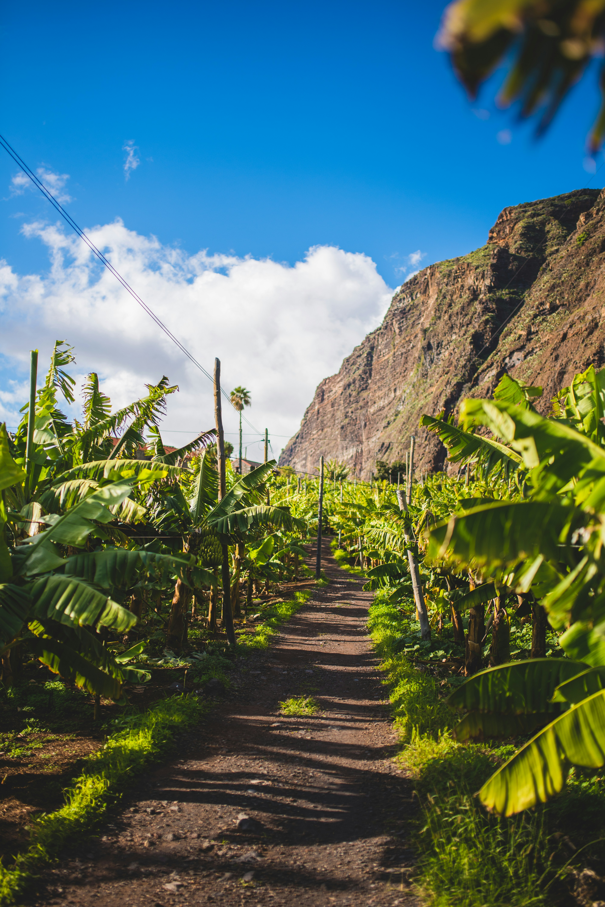

"To travel to Madeira is to embark on a journey of discovery, where every corner reveals a new wonder and every moment is filled with enchantment." - José Saramago
The story
Chapter 1: Origins and Discovery
Nestled in the vast expanse of the Atlantic Ocean lies Madeira Island, a gem born from the fiery depths of volcanic activity millions of years ago. Its rugged cliffs and fertile valleys tell the story of a land shaped by nature's mighty forces. But it wasn't until the early 15th century that Madeira's tale truly began.
Legend has it that in 1419, two Portuguese explorers, João Gonçalves Zarco and Tristão Vaz Teixeira, embarked on a daring voyage, braving uncharted waters in search of new lands. What they found was beyond their wildest dreams – an island paradise teeming with lush vegetation, cascading waterfalls, and breathtaking vistas. They named it "Madeira," meaning "wood" in Portuguese, a testament to the island's dense forests.
Chapter 2: Colonization and Cultivation
Word of Madeira's beauty spread like wildfire, attracting settlers eager to claim this verdant oasis as their own. Portuguese colonists arrived, bringing with them crops and traditions from their homeland. They transformed the landscape, carving terraces into the hillsides and planting vineyards, orchards, and sugarcane fields.
Sugarcane became the island's lifeblood, fueling a thriving industry that brought wealth and prosperity to Madeira. But it was the ingenuity of Madeiran farmers that truly set them apart. To maximize precious arable land, they built an intricate network of irrigation channels known as "levadas," a marvel of engineering that still crisscrosses the island today.
Chapter 3: Endurance and Resilience
Throughout its history, Madeira has faced its share of challenges – from pirate raids to devastating earthquakes. But through adversity, the Madeiran spirit has always prevailed. In the 19th century, the decline of the sugar trade led to a shift towards wine production, and Madeira wine soon gained international acclaim, beloved by royalty and connoisseurs alike.
In the 20th century, Madeira emerged as a popular tourist destination, drawing visitors with its mild climate, stunning scenery, and warm hospitality. Today, Madeira continues to enchant travelers from around the globe, offering a rich tapestry of experiences – from hiking along ancient levadas to savoring local delicacies in quaint villages.
Chapter 4: A Legacy of Beauty and Wonder
As the sun sets over the rugged cliffs of Madeira, casting a golden glow upon its emerald hills, one can't help but feel a sense of awe and wonder. For Madeira is more than just an island – it's a testament to the enduring power of nature and the indomitable spirit of its people.
So come, dear traveler, and embark on a journey through time and space. Discover the secrets of Madeira – where every cliff, every tree, every winding path tells a story waiting to be told.